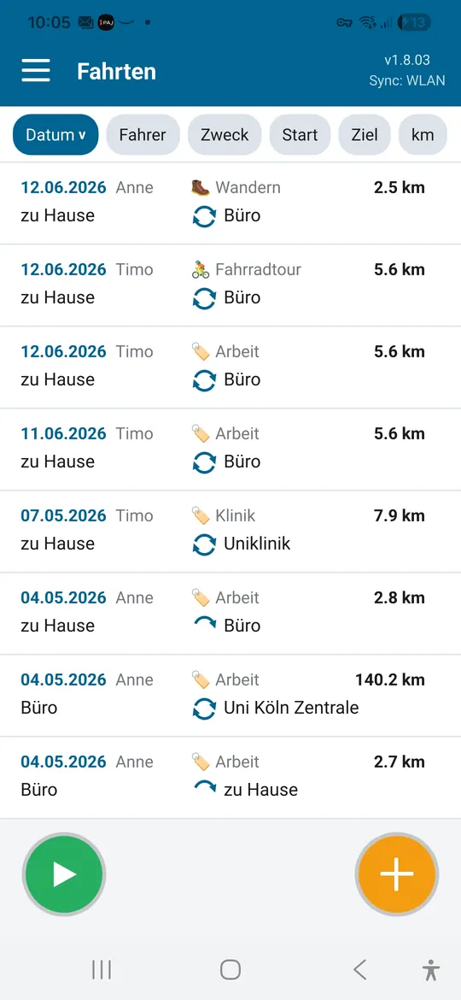
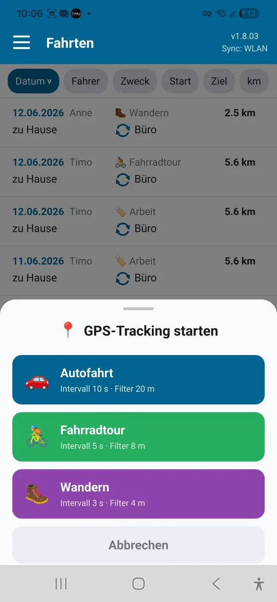
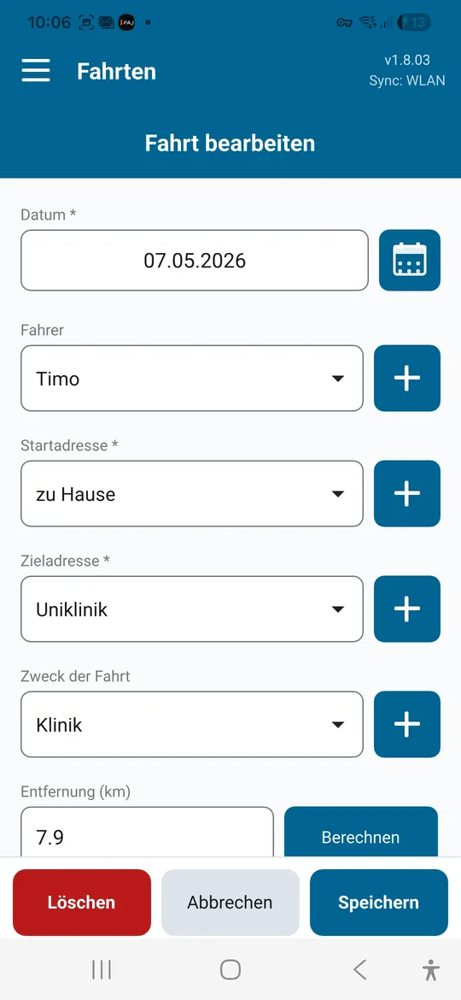
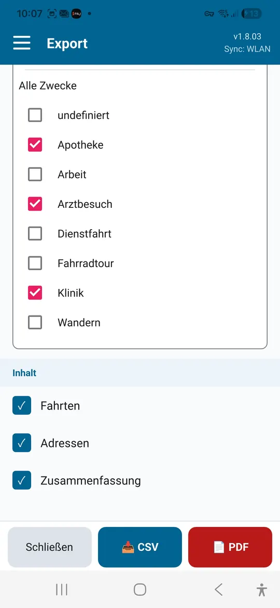

Selbstständige und kleine Betriebe
Kundenbesuche und Dienstfahrten mit Zweck und Entfernung festhalten. Die Monatsübersicht dient als Grundlage für Abrechnung und Steuer.
Fahrtenbuch-App für Android und Windows
Driver's Log erfasst Fahrten mit Datum, Fahrer, Zweck, Start und Ziel und berechnet die Entfernung automatisch. Für Dienstfahrten, Arztfahrten und Freizeittouren, mit Export als PDF oder CSV.
| Datum | Fahrer | Zweck | Start → Ziel | km |
|---|---|---|---|---|
| 06.10. | Anne | Kundenbesuch | Büro → Fa. Weber | 38,4 |
| 09.10. | Timo | Arztbesuch | zu Hause → Praxis Dr. Klein | 12,6 |
| 12.10. | Anne | Radtour | Rurufer → Wassenberg | 24,1 |
| Summe | 75,1 |

Ein Fahrtenbuch hilft überall dort, wo Fahrten nachgewiesen, abgerechnet oder einfach festgehalten werden sollen.
Kundenbesuche und Dienstfahrten mit Zweck und Entfernung festhalten. Die Monatsübersicht dient als Grundlage für Abrechnung und Steuer.
Fahrten zu Praxen, Kliniken und Therapien sammeln, als Nachweis für die Steuererklärung oder eine Kostenerstattung.
Fahrten für den Verein, das Ehrenamt oder die Betreuung von Angehörigen dokumentieren und gesammelt abrechnen.
Die Tour per GPS aufzeichnen, Start und Ziel benennen und die gefahrene Strecke festhalten.
Die gewanderte Strecke per GPS erfassen, auch wenn das Handy in der Tasche steckt.
Hinweis zum Finanzamt: Für die Fahrtenbuchmethode beim Firmenwagen gelten strenge Formvorschriften. Ob Ihre Aufzeichnungen dafür ausreichen, klären Sie im Zweifel mit Ihrer Steuerberatung.
Alles, was ein Fahrtenbuch braucht, ohne Formularkram.
Start- und Zieladressen speichern Sie im Adressbuch und wählen sie danach mit einem Tipp aus. Vorschläge kommen aus OpenStreetMap.
Die Strecke zwischen Start und Ziel wird per Routenberechnung ermittelt, auf Wunsch für Hin- und Rückweg.
Für Autofahrt, Fahrradtour oder Wanderung. Die Aufzeichnung läuft im Hintergrund und füllt danach das Fahrtformular aus.
Jede Fahrt einer Person zuordnen, etwa wenn sich Familie oder Team ein Auto teilen.
Kundenbesuch, Arztbesuch, Einkauf: Zwecke legen Sie selbst an und sortieren die Liste danach.
Nach Monat oder ganzem Jahr und nach Fahrtzweck, mit Fahrtenliste, Zusammenfassung nach Strecke und Adressliste.
Tägliches Backup in einen Ordner Ihrer Wahl. Es bleibt auch erhalten, wenn die App gelöscht wird.
Deutsch, Englisch, Französisch, Niederländisch und Spanisch.
WLAN-Sync · Pro
Ihr Android-Gerät und Ihr Windows-PC gleichen die Fahrten direkt über Ihr WLAN ab. Wer eine Fahrt speichert, sieht sie kurz darauf auf den anderen Geräten.



Abbildungen mit Beispieldaten.
Driver's Log ist kostenlos. Ein einmaliger In-App-Kauf schaltet Pro frei, ohne Abo.
| Funktion | Free | Pro |
|---|---|---|
| Fahrten | bis 25 | unbegrenzt |
| GPS-Aufzeichnung | ✓ | ✓ |
| Export als PDF und CSV | ✓ | ✓ |
| Mehrere Fahrer und eigene Fahrtzwecke | ✓ | ✓ |
| Automatische Datensicherung | ✓ | ✓ |
| WLAN-Sync zwischen Geräten | – | ✓ |
| Windows-App mit Abgleich | – | ✓ |
Den aktuellen Preis zeigt Google Play in Ihrer Währung an.
Die Windows-App ist kostenlos. Für den Abgleich mit dem Handy braucht die Android-App Pro.
Windows-Version auf GitHubNur auf Ihren eigenen Geräten, in einer lokalen Datenbank. Es gibt kein Benutzerkonto und keinen Cloud-Speicher.
Nur für Adressvorschläge und die automatische Entfernungsberechnung. Fahrten erfassen und der WLAN-Sync funktionieren auch ohne Internet.
Ihre bisherigen Fahrten bleiben vollständig erhalten. Neue Fahrten legen Sie dann mit Pro an.
Der Export ist eine gute Grundlage für Steuererklärung und Abrechnung. Ob er im Einzelfall genügt, etwa für die Fahrtenbuchmethode beim Firmenwagen, hängt von Ihrer Situation ab.